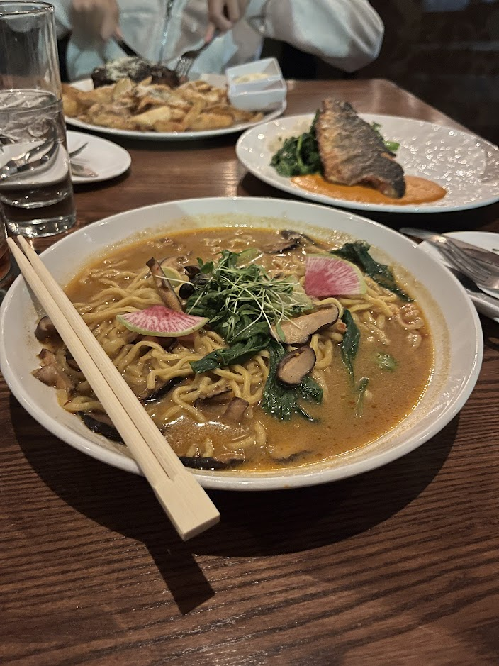

Downtown - Mushroom Ramen

- Price: $15
- Rating: 5/10
- Last date I had it : 2025-04-01
- Review: overall just tastes like shin ramyun, idk how else to describe it. This was a vegan option at an american restaurant so I was like “why not.” The noodles were decent, but the soup is a mushroom base that only reminds me of shin. It’s pretty sad as a ramen, and even more so as a vegan option. I pity vegetarians/vegans who get served this. Overall the toppings don’t make sense either, though the mushrooms were nice. I like shin, don’t get me wrong. But I only like it as an instant ramen option, not as a “go outside to try food at a restaurant” type of ramen. It’s the only ramen so far which I didn’t finish and made my friend eat instead. I mean, I had low expectations and it met my low bar.